Çapa Makineleri
Toprak İşlerinde Güçlü Çözümler
Bahçe, tarla ve toprak işleme ihtiyaçlarınıza uygun çapa makinelerini inceleyin.
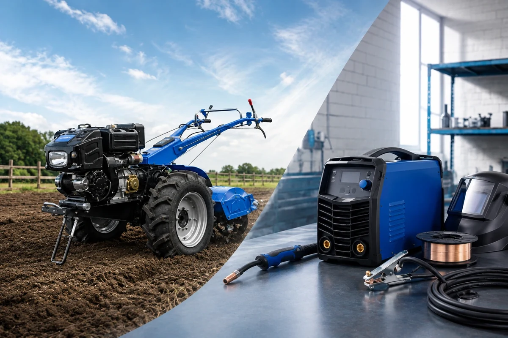
Darende Tarım; çapa makineleri, jeneratörler, kaynak makineleri, bahçe ekipmanları ve teknik ürün çözümleriyle Darende, Malatya ve çevresine hizmet verir. Türkiye’nin 81 iline kargo imkânı sunar.
Tarım, bahçe ve teknik ekipman gruplarını daha düzenli bir yapıda keşfedin.
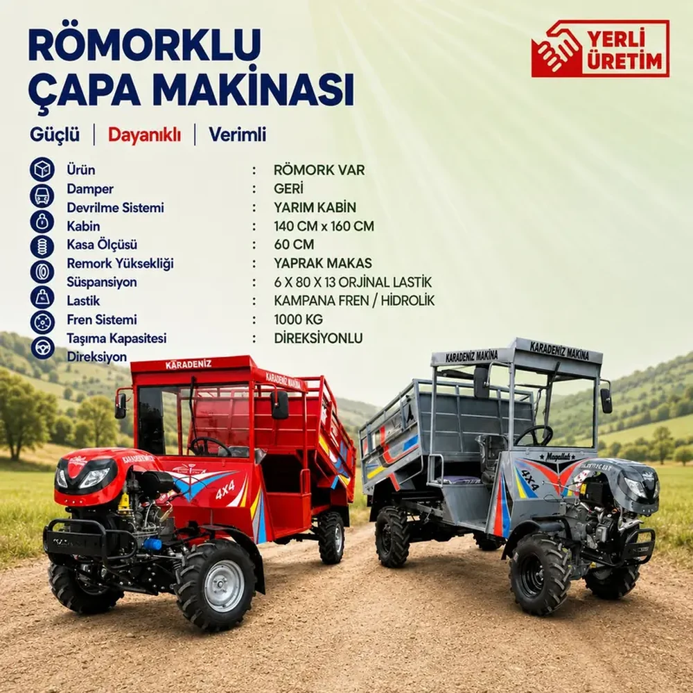
Kabinli, yarım kabinli ve römorklu kapalı çapa makinelerini inceleyin.
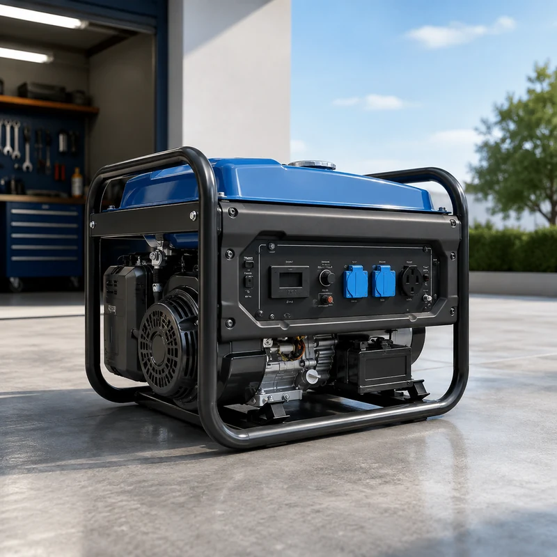
Portatif güç çözümleri.
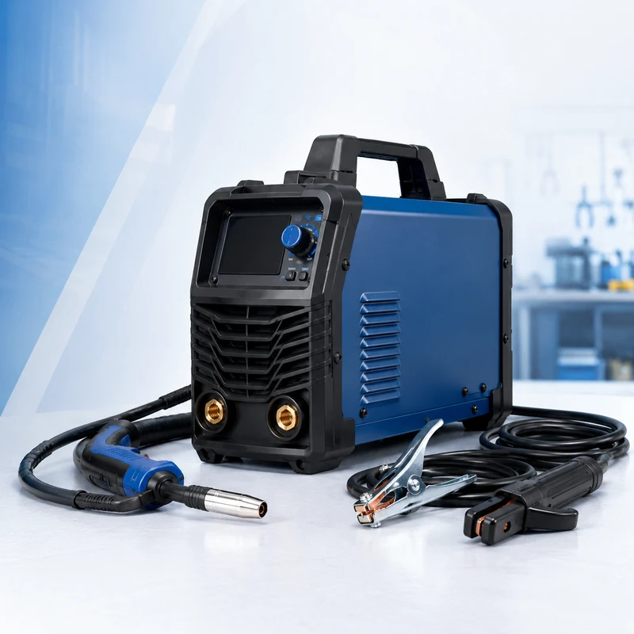
Atölye ve saha ekipmanları.
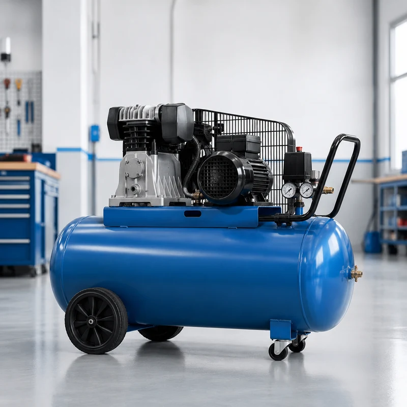
Atölye için hava çözümleri.
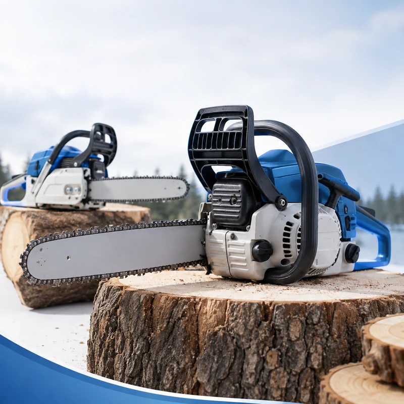
Budama ve kesim ekipmanları.
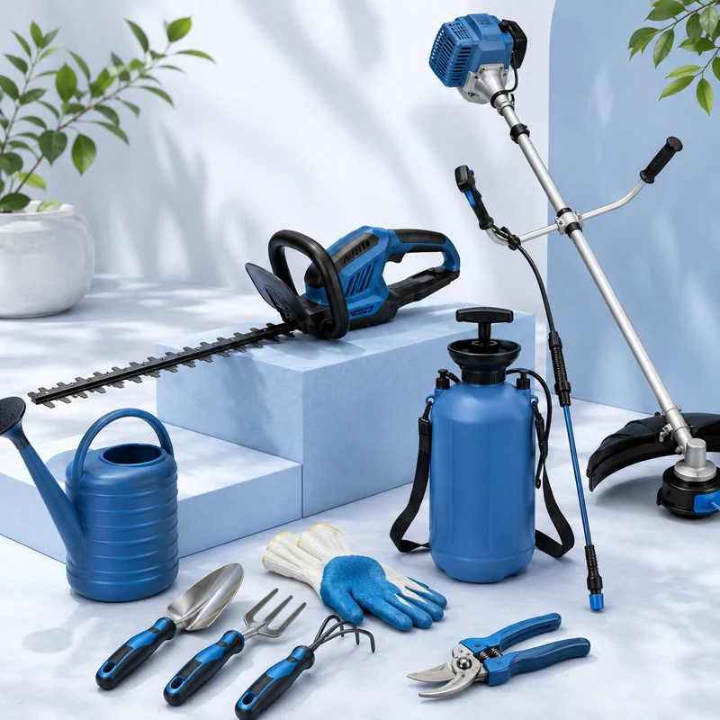
Bakım ve teknik ürün grupları.
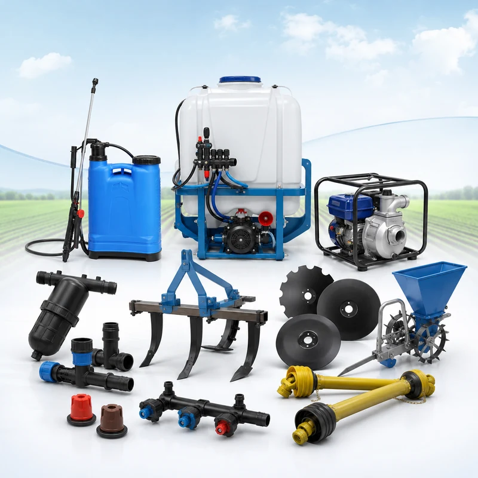
Farklı kullanım alanları için ekipmanlar.
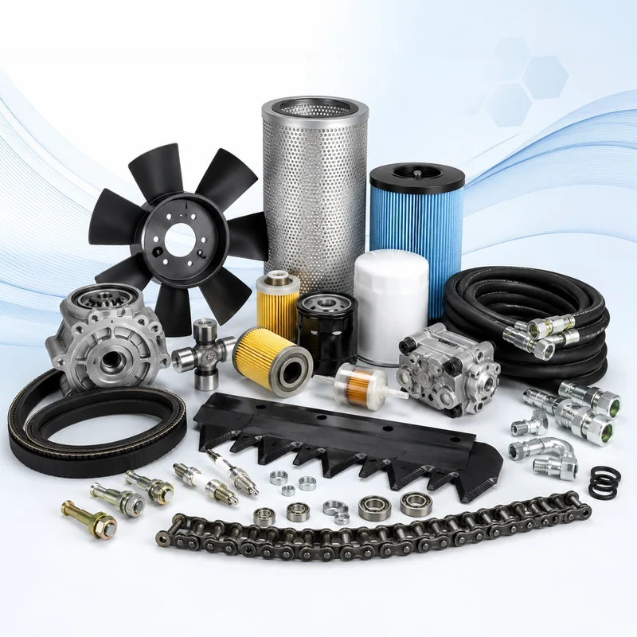
Makine ve ekipman tamamlayıcıları.
Darende Tarım ürün seçkisinden öne çıkan makineler.
Tarım ve teknik ekipmanlarda kurumsal duruşu, yerel erişimi ve hızlı WhatsApp iletişimini tek sayfada birleştiren güçlü bir hizmet yapısı.
Tarım ve teknik ekipmanlarda öne çıkan ürün gruplarını keşfedin.
Bahçe, tarla ve toprak işleme ihtiyaçlarınıza uygun çapa makinelerini inceleyin.

Atölye ve saha işleriniz için farklı kaynak makinesi seçeneklerini keşfedin.
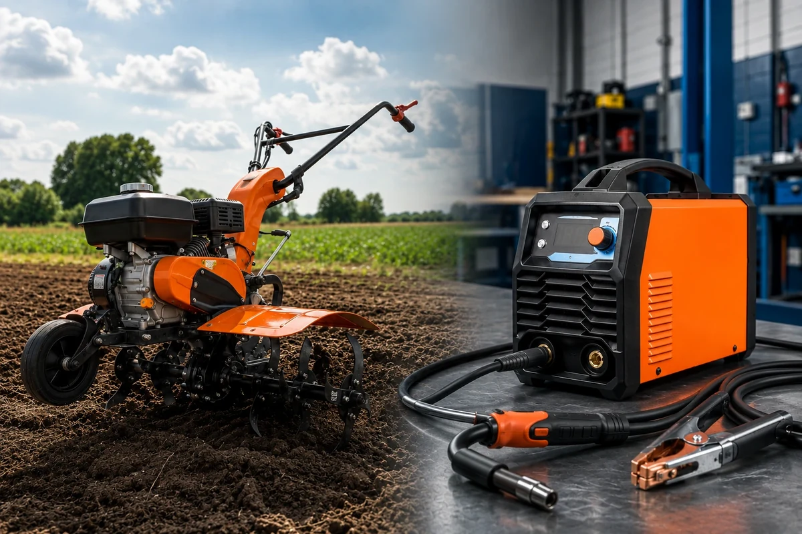
Tıklanabilir marka blokları ile ürün gruplarına hızlı erişim sağlayın.
Darende Tarım; çapa makineleri, jeneratörler, kaynak makineleri, kompresörler, motorlu testereler ve farklı tarım ekipmanlarını kullanıcılarla buluşturan yerel bir işletmedir. Darende ve Malatya başta olmak üzere Gürün ve Elbistan çevresine hizmet verir; Türkiye geneline kargo seçeneği sunar.
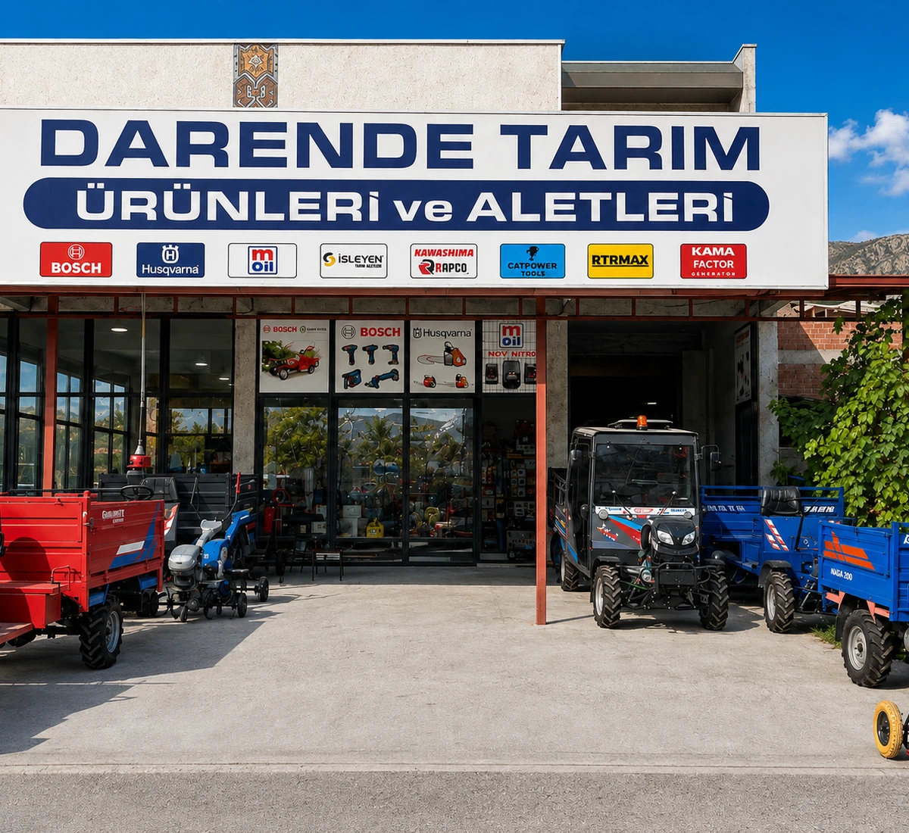
Harita destekli iletişim alanı ile konum, telefon ve WhatsApp erişimini tek blokta sunun.
Darende / Malatya
Konumu AçTelefon ile ürün bilgisi
AraMesaj bırakabilirsiniz
WhatsApp’tan YazÜrün seçimini kolaylaştıran kısa bilgiler.
Toprak yapısı, kullanım alanı ve makine boyutu temel seçim kriterleridir.
Çalıştırılacak cihazların toplam yükü ve ilk kalkış gücü dikkate alınmalıdır.
Pala boyu, kullanım amacı, ağırlık ve bakım imkânı önemlidir.
Ürün modeli, fiyat bilgisi veya teknik detay için WhatsApp üzerinden ulaşın.